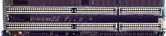

| Системная шина предназначена
для передачи информации между процессором и остальными электронными компонентами
компьютера. |
|
По системной шине осуществляется адресация устройств и происходит обмен
специальными служебными сигналами. Упрощенно системную шину можно представить
как совокупность сигнальных линий, объединенных но назначению (данные,
адреса, управление).
Системная
шина представляет собой набор проводников электрических сигналов и систему
протоколов соединения устройств при помощи этих проводников. Тип и характеристики
протоколов передачи информации по системной шине определяют скорость передачи
информации между отдельными устройствами материнской платы. Системные шины
персональных компьютеров стандартизируются как по числу контактов и разрядности
(числу проводников, используемых для одновременной передачи данных), так
и по протоколам общения устройств через проводники. Системная шина соединяет
все устройства компьютера в единое целое и обеспечивает их взаимодействие,
взаимоуправление и работу с центральным процессором.
В персональных
компьютерах используются системные шины стандартов ISA, EISA, VLB и PSI.
Шина ISA
Системная шина ISA (Industry Standard Architecture) применяется начиная
с процессора i80286. Гнездо для плат расширения включает основной 64-контактный
и дополнительный 36-контактный разъемы. Шина 16-разрядная, имеет 24 адресные
линии, обеспечивает прямое обращение к 16 Мбайт оперативной памяти. Количество
аппаратных прерываний — 16, каналов DMA — 7. Допускается возможность синхронизации
работы шины и процессора разными тактовыми частотами. Тактовая частота
— 8 МГц. Максимальная скорость передачи данных — 16 Мбайт/с.
Шина EISA
Для процессора
i80386 с целью повышения производительности разработана шина EISA (Extended
Industry Standard Architecture). Шина обеспечивает 32-разрядную передачу
данных, в том числе в режиме DMA, улучшенную систему прерываний и арбитраж
DMA, автоматическую конфигурацию системы и плат расширения, позволяет адресовать
до 4 Гбайт памяти. Доступ к памяти имеет не только процессор, но и платы
управляющих устройств типа bus-master (управляющие передачей данных по
шине), и устройства, имеющие возможность организовать режим DMA. Стандарт
поддерживает многопроцессорную архитектуру для "интеллектуальных" плат,
оснащенных собственными микропроцессорами: данные от контроллеров дисков,
графических и сетевых адаптеров обрабатываются независимо, не загружая
основной процессор.
Максимальная
скорость передачи данных — 33 Мбайт/с (в пакетном режиме). В стандартном
режиме скорость такова же, как у шины ISA.
Разъем
шины EISA — универсальный, допускается установка как EISA, так и обычных
ISA плат расширения.
Контроллер
DMA поддерживает 8-, 16- и 32-разрядные режимы передачи данных.
Тактовая
частота шины — 8–10 МГц.
Компьютеры,
использующие системные платы с шиной EISA, достаточно дорогие. В основном
это мощные файл-серверы или рабочие станции.
Шина VLB

Шина VLB (VESA Local Bus) предложена ассоциацией VESA (Video Electronics
Standards Association). Она является расширением шины процессора и предназначена
для работы с контроллерами накопителей и видеоадаптером. Цель разработки
— увеличение быстродействия компьютера за счет повышения тактовой частоты
работы периферийных устройств (до 33 МГц и выше).
1 спецификация
шины — 32-разрядная, обеспечивает подключение до 3 периферийных устройств.
Подключаемые устройства — контроллеры накопителей, видеоадаптеры, сетевые
платы. Конструктивно VLB выглядит как короткий 112-контактный соединитель,
установленный рядом с разъемом ISA. В нем 32 линии используются для передачи
данных, 30 для передачи адреса. Максимальная скорость передачи данных
по шине — 130 Мбайт/с.
2 спецификация
— разработана после появления процессора Pentium. Предусмотрено использование
64-разрядной шины данных, увеличение количества разъемов расширения (3
на 40 МГц и 2 на 50 МГц). Скорость передачи данных возросла до 400 Мбайт/с.
Шина PCI
Шина PCI (Peripherals Connection Interface) разработана фирмой Intel. В
отличие от VLB, она может использоваться вне зависимости от типа процессора
и в иных компьютерных платформах. Эта шина является стандартом для систем
на базе Pentium.
К шине
подключается до 10 устройств. Шина работает на фиксированной частоте 33
МГц, обеспечивает режим автоконфигурации PnP (Plug and Play). Шина использует
124-контактный (32-разрядная) или 188-контактный разъем (64-разрядная передача
данных). Скорость обмена — до 264 Мбайт/с.
Спецификация
PCI 2.1 обеспечивает работу с частотой 66 МГц и скорость обмена до 520
Мбайт/с.
Современные конфигурации
На материнских платах с процессором
Pentium обычно устанавливают 3 ISA и 4 PCI разъема плат расширения. С совершенствованием
системных плат и переходом к новым типам процессоров количество слотов
ISA уменьшается, а слотов PCI возрастает. Все большее количество плат расширения
переводится с медленной шины ISA на быструю PCI. Например, на системной
плате S1837UANG Thunderbolt, выпущенной в 1999 г. предусмотрены 1 слот
расширения шины ISA и 6 слотов шины PCI. В ближайшей перспективе, по завлениям
разработчиков системных плат, полный отказ от шины ISA и переход на шину
PCI.